Compare à ton Lightroom, mêmes valeurs. Panneau Color Grading, roues aux valeurs indiquées (teinte°/saturation). Témoin = photo sans réglage. Duo = teal-and-orange (ombres bleu 220/60 + hautes lumières orange 40/60), à comparer aussi au même look par Étalonnage. Calibré sur mesures Lightroom : tons moyens et luminance globale. PROVISOIRE (modélisé, non mesurable dans les exports) : profils ombres/hautes lumières, Fusion, Balance.
Photo A — DSCF5171.JPG 6240×4160 (EXIF OK)
Crop 1:1 (256 px natif) : petale / fleur rouge @ (2600, 2500) — le teintage des ombres et des hautes lumieres se juge ici en 1:1
Temoin (tout a 0)

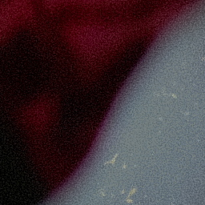
moy 63.6 · σ 34.9
cb123799 / 16de2ece
Voile -100 (ajoute la brume)
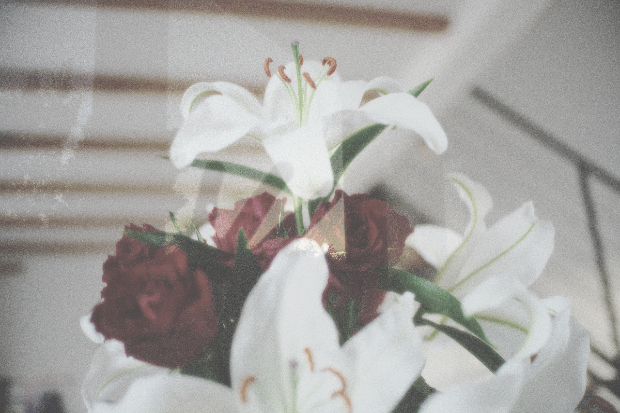
moy 163.6 · σ 40.8
4318eac8 / e5cb54d3
Voile -50
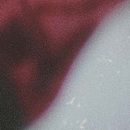
moy 122.2 · σ 42.2
2f4a4f0e / 7f812691
Voile +50
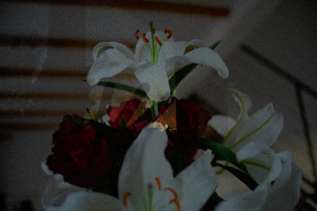
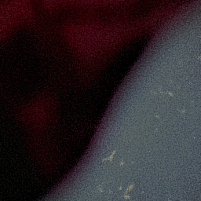
moy 45.3 · σ 27.3
b952d25a / a486e8ca
Voile +100 (retire la brume)
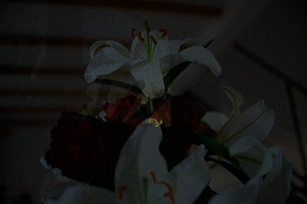
moy 21.6 · σ 14.7
99a3e310 / f4a21b27
Temperature +100 (rechauffe, eclaircit)
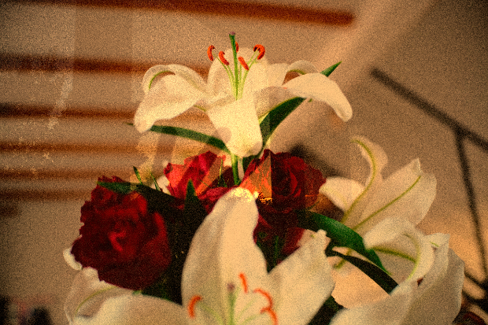
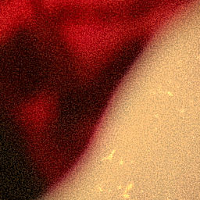
moy 107.5 · σ 54.1
282ae0c9 / 14d2cfc2
Temperature -100 (refroidit, eclaircit)
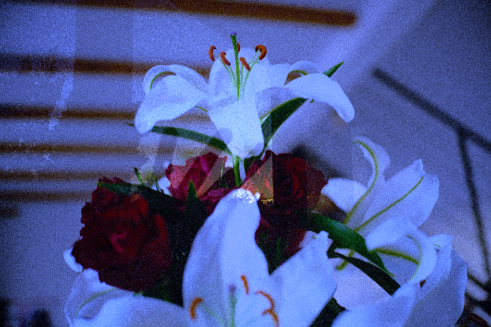
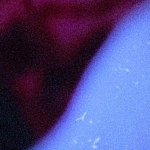
moy 90.1 · σ 47.4
6e3cfe11 / 9c582ac7
Blancs +100 (local)
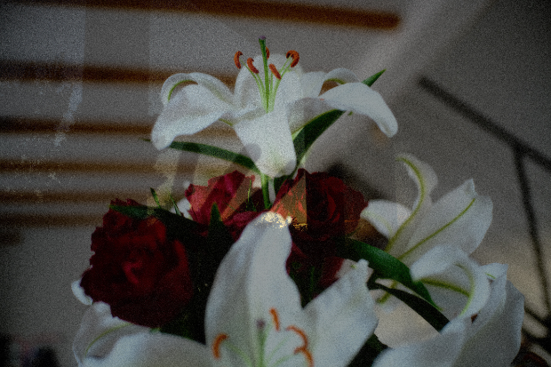
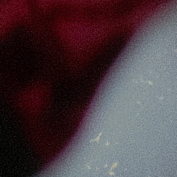
moy 73.6 · σ 42.4
f822b5de / d4c505d3
Noirs -100 (local)
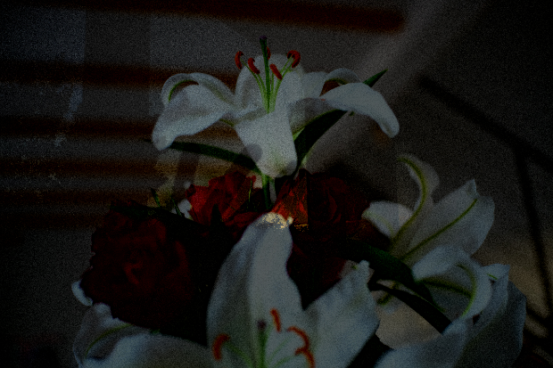
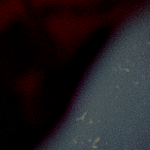
moy 25.8 · σ 26.6
ad746594 / 7c89e35c
Clarte +100 (couleurs tenues)
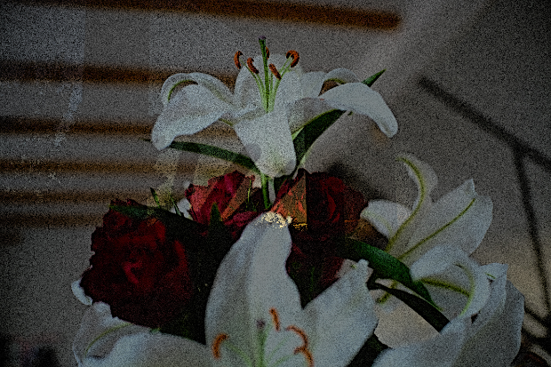
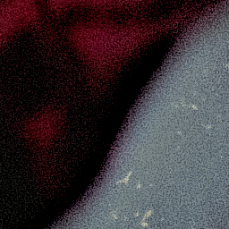
moy 61.0 · σ 37.5
b4e90449 / 32870d08
Photo B — DSCF5169.JPG 6240×4160 (EXIF OK)
Crop 1:1 (256 px natif) : main (peau) / orange @ (1500, 2300) — le teintage des ombres et des hautes lumieres se juge ici en 1:1
Temoin (tout a 0)
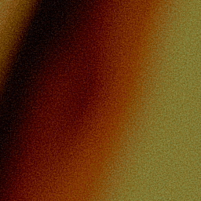
moy 38.6 · σ 42.4
a113cceb / b79f68bc
Voile -100 (ajoute la brume)
moy 126.6 · σ 54.3
3bc76908 / efca58a7
Voile -50
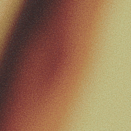
moy 88.1 · σ 54.1
47be3eec / 9479ce67
Voile +50
moy 28.0 · σ 32.4
62601f89 / 25870c7b
Voile +100 (retire la brume)
moy 13.8 · σ 17.2
e4bd56cd / 48f55285
Temperature +100 (rechauffe, eclaircit)
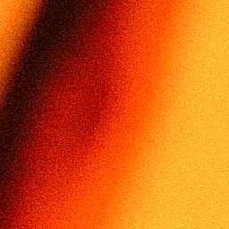
moy 67.2 · σ 67.3
10db1243 / 23edd215
Temperature -100 (refroidit, eclaircit)
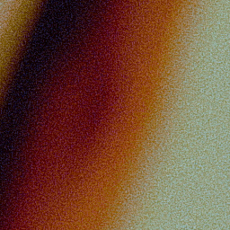
moy 53.2 · σ 56.4
db35345e / 356e69f5
Blancs +100 (local)
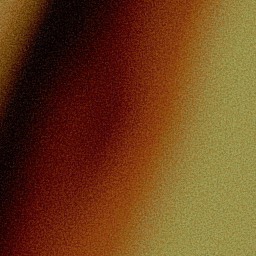
moy 45.3 · σ 51.4
619b788b / ceb1b2ec
Noirs -100 (local)
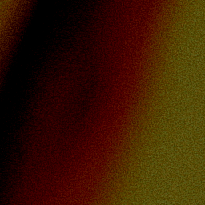
moy 17.9 · σ 27.4
62890dae / ce0854b7
Clarte +100 (couleurs tenues)
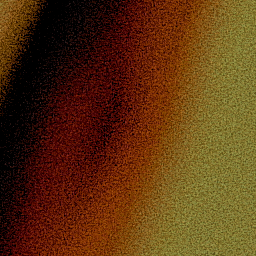
moy 37.5 · σ 42.9
2f6bb469 / a9cb8f36